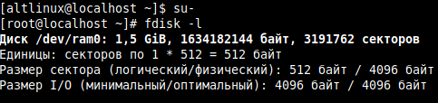
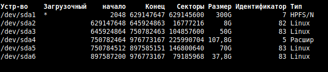
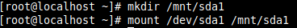
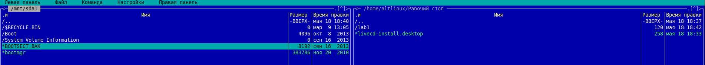
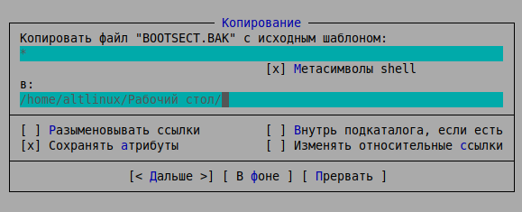
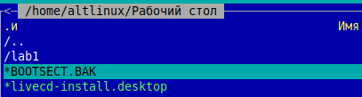
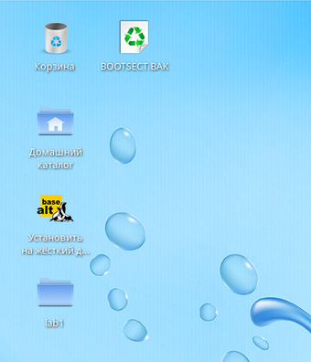

1. Для установки операционной системы была использована программа Rufus. После установки необходимо вставить флеш-диск в выключенное устройство и запустить необходимую ос.
2. После запуска системы входим в root (командой su-), после выводим лист разбития диска (командой fdisk -l)

3. Смотрим, где располагается основная ОС, в данном случае на /dev/sda1

4. Создаем точку монтирования вводом команды mkdir /mnt/sda1, командой mount /dev/sda1 /mnt/sda1 в нее монтируем диск с системой.

5. Заходим в mc, открываем созданный каталог монтирования в левом окне, в правом - каталог, куда будет копироваться файл.

6. Копируем файл, путь прописан автоматически

7. Файл скопирован, проверяем его местонахождение

